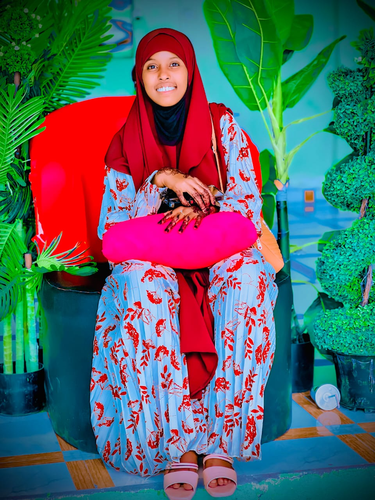

As a student of information science inspired by the digital age, you likely possess a keen interest in understanding how information is created, organized, accessed, and utilized in today's technologically-driven world. Here are some characteristics and pursuits that might resonate with you:
You're fascinated by the rapid advancements in technology and how they shape the way information is stored, processed, and communicated. Whether it's artificial intelligence, big data analytics, or the Internet of Things, you're eager to explore emerging technologies and their impact on information systems.
You have a strong analytical mindset, enabling you to dissect complex information systems and understand their underlying structures. You enjoy solving problems and optimizing processes to enhance information retrieval and management efficiency.
